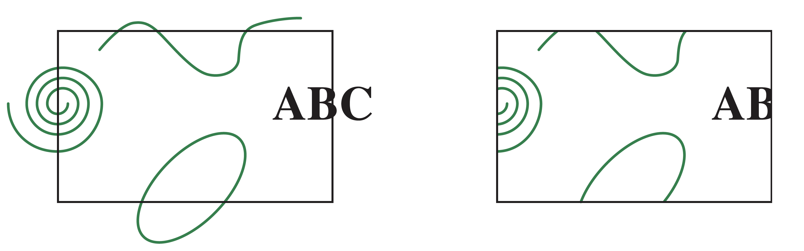
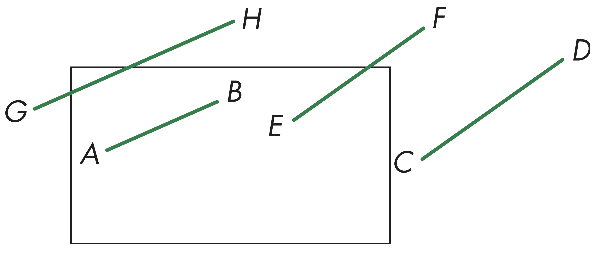
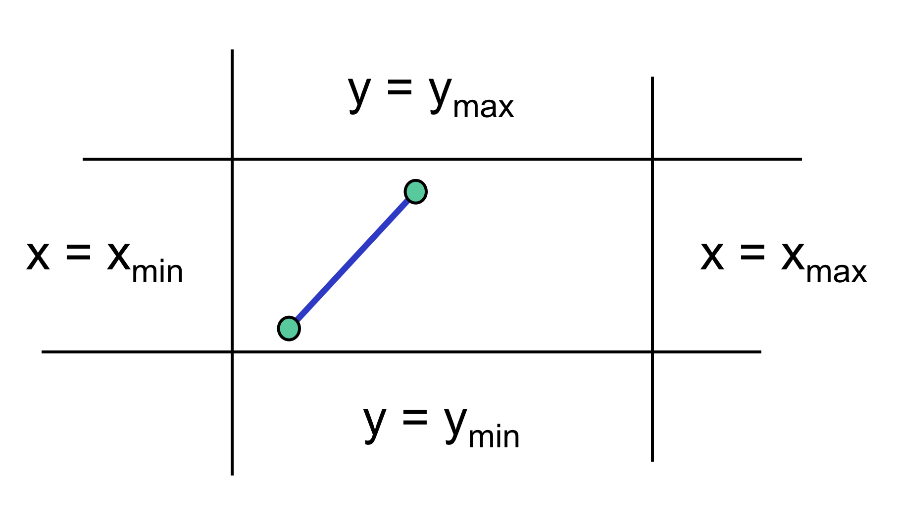
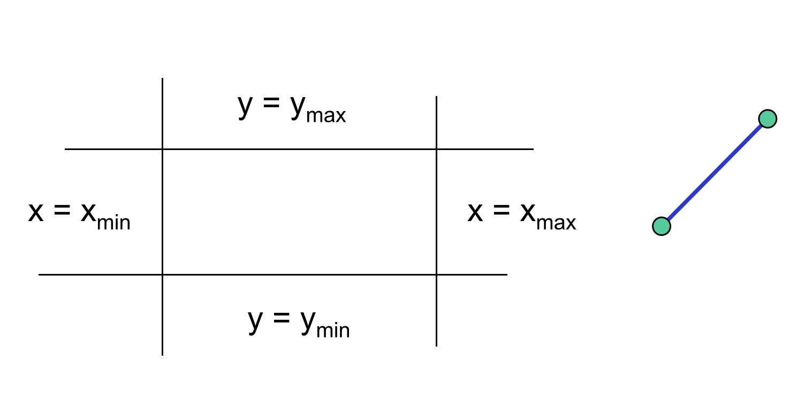
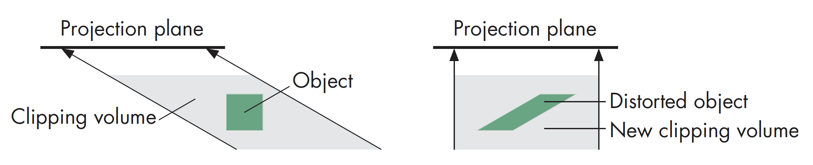
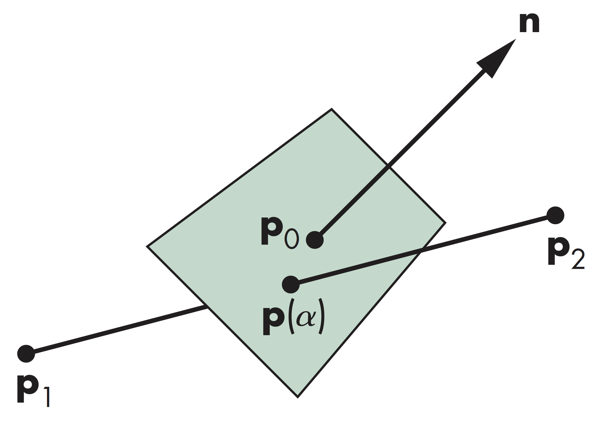
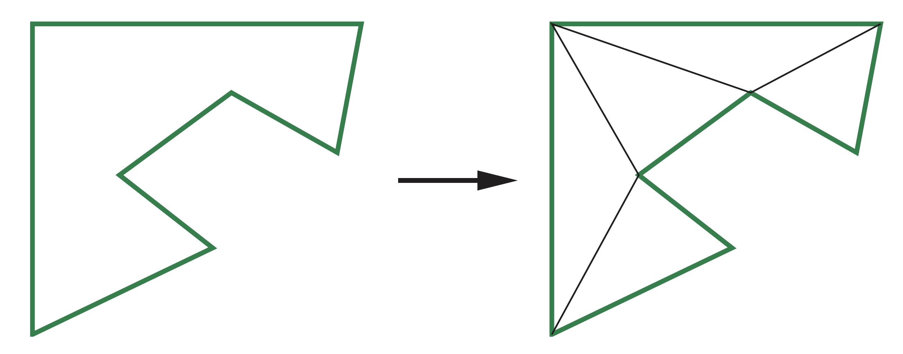
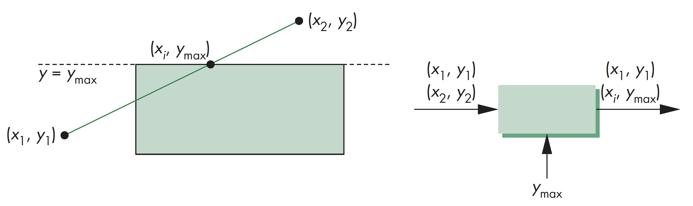
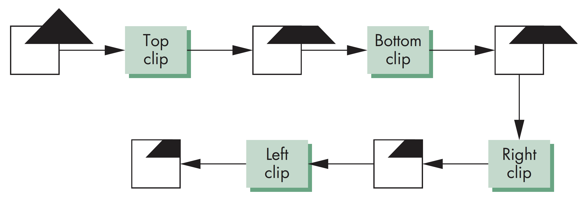

计算机图形学
第八章 从几何到像素
裁剪
裁剪
概述
裁剪包括以下内容:
- 二维窗口裁剪
- 三维空间裁剪
对多边形裁剪相对容易，但是对曲线和文本相对较难，主要原因在于需要先将曲线和文本转换成线段和多边形再计算
裁剪
二维线段裁剪
二维线段裁剪可采用暴力求解，即计算线段与裁剪窗口每条边的交战。但因为 每次交战计算都需用到除法，因此计算效率不高
裁剪
Cohen-Sutherland算法(1)
Cohen-Sutherland算法的主要思路是尽可能不通过计算交点去除各种可能的情况。首先需要用四条线确定裁剪窗口的大小

裁剪
Cohen-Sutherland算法(2)
对每条线的两个端点，定义相应的区域编码
情况1. 线段的两个顶点都位于裁剪窗口内，则接受整条线段
裁剪
Cohen-Sutherland算法(3)
情况2. 线段两个顶点都位于裁剪窗口外，且两个顶点都位于四条边界线的同侧，则拒绝整条线段
裁剪
Cohen-Sutherland算法(4)
情况3. 线段的两个顶点，一个位于裁剪窗口内，一个位于裁剪窗口外，需要处理至少一个交点

裁剪
Cohen-Sutherland算法(5)
情况4. 线段的两个顶点都位于裁剪窗口外，但线段都有部分位于裁剪窗口内，需要处理至少一个交点

裁剪
定义区域编码
对线段的每个顶点，定义区域码，区域码由四位数字构成，表示成$b_0b_1b_2b_3$，区域码将平面分割成9个部分，计算区域编码需要进行最多4次减法计算，有

裁剪
区域码示例
考虑如下图中5种情形:
对于直线AB: 有$outcode(A)=outcode(B)=0$，接受直线AB
裁剪
区域码示例
对于直线CD: 有$outcode(C)=0$, $outcode(D)\neq 0$，首先计算交点，outCode(D)中1的位置确定了CD和哪条边相交，若从A点开始连接某点的直线对应的outcode中有两个1，则需要处理两个直线交点
裁剪
区域码示例
对于直线EF: 将$outcode(E)$和$outcode(F)$按位与后结果非0，表明两个outcode有至少一个相同的位置上均为1，即表明该线段位于相应的裁剪窗口的外面，因此舍弃
裁剪
区域码示例
对于直线GH和IJ: 其端点的$outcode$值相同，均非0，但按位与后结果均为0，可将线段缩短后使之与窗口的一条边相交，计算相交点的区域码，然后再重复执行
裁剪
Cohen-Sutherlandd算法效率
大多应用中，裁剪窗口比整体对象数据要小，大部分直线在都会在裁剪窗口一条或多条边外，可根据其结果进行相应裁剪。但是，如果需要通过两个或以上步骤对直线进行缩减，算法需要不断重复执行时，计算效率会受到影响
裁剪
三维空间Cohen-Sutherland算法
在三维空间应用Cohen-Sutherland算法，需用6位区域编码，裁剪区域为一个由平面构成的空间区域


裁剪
裁剪和正则化
三维空间的一般化裁剪需要计算线段与任意平面之间的交战，比如下面两图分别示意了在正交和斜投影视图下的情况

裁剪
正则化
正则化可看作是投影成像的一部分，正则化后，可以相对右平行六面体的各面计算裁剪，且一般的相交计算只需要计算两个浮点数之间的差值即可/p>
裁剪
线和平面相交
$$ \alpha=\frac{n\cdot(p_0-p_1)}{n\cdot(p_2-p_1)} $$
裁剪
多边形裁剪
多边形裁剪比线段裁剪要复杂，对一条线段进行裁剪会产生最多一条线段，但对一个多边形裁剪会生成多个多边形，但是对凸多边形进行裁剪只会产生最多一个多边形


裁剪
镶嵌和凸包性
对于非凸多边形，可以将其剖分为一组三角形
裁剪
黑盒裁剪
线段裁剪可以视作黑盒操作，输入为两个顶点，输出要么无顶点，要么为经过裁剪后的线段顶点
裁剪
裁剪流水线
相对裁剪窗口各边或裁剪空间各面的裁剪计算都是独立的，因此可以在流水线上分别独立计算裁剪结果

裁剪
裁剪示例
示例为二维平面上的多边形裁剪，如果要进行三维空间裁剪，只需加上前面和后面，该方法应用于SGI几何引擎中，只有少量的延迟
裁剪
包围盒
对复杂多边形进行裁剪，可先利用与坐标轴平行的包围盒，即用最小的与坐标轴平行的矩形区域包围住目标对象，其计算很简单，只需计算x和y轴方向的最大最小值即可
一般也可直接根据包围盒的裁剪结果决定是否接受或裁剪

裁剪
裁剪和可见性
裁剪和隐面消除算法有共同性，目的都是为消除对相机不可见的物体对象。在将物体数据传入流水线处理前可以利用可见性或遮挡测试去除尽可能多的不可见多边形，以提高计算效率